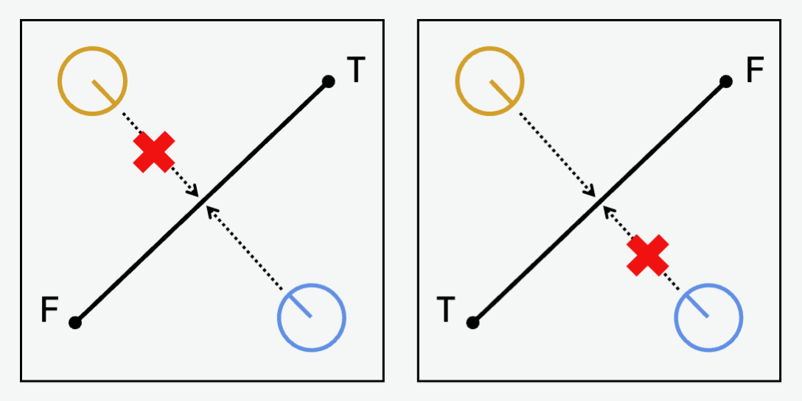
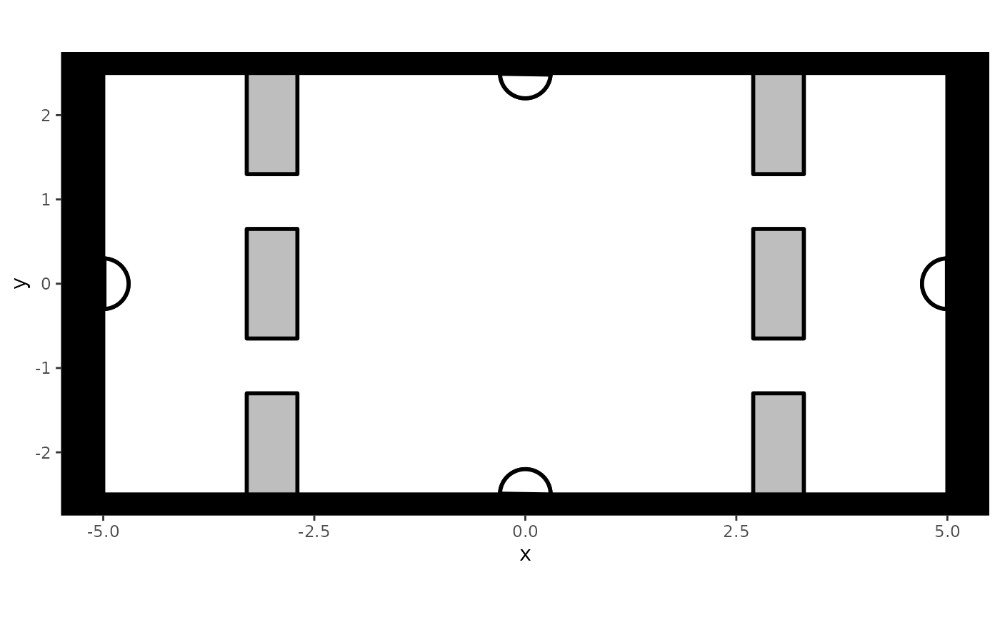
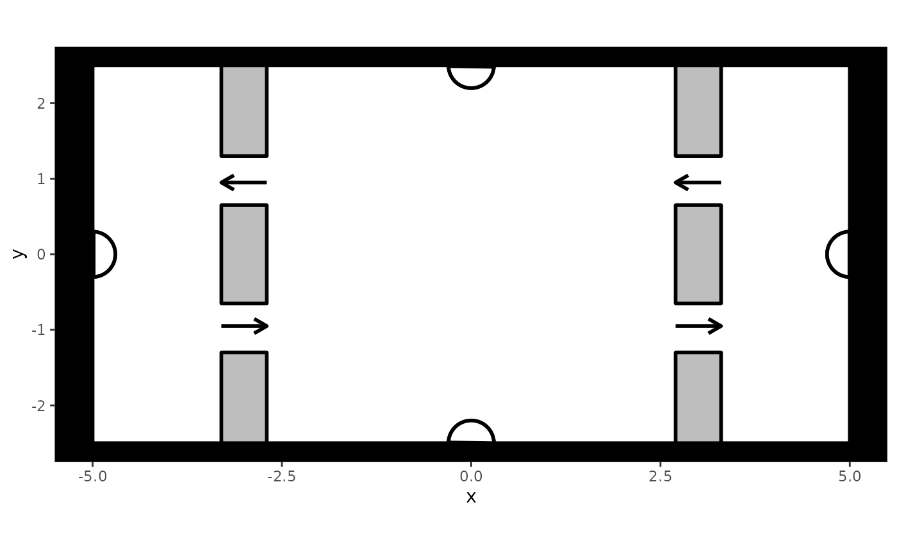
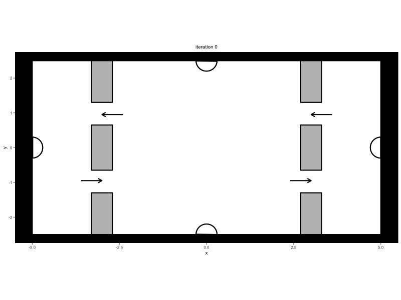
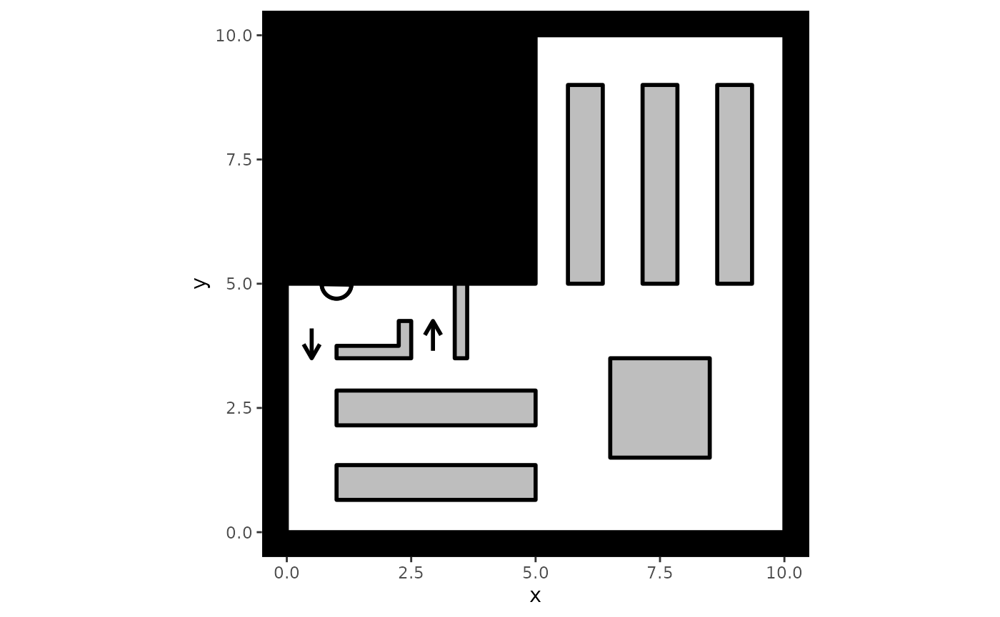
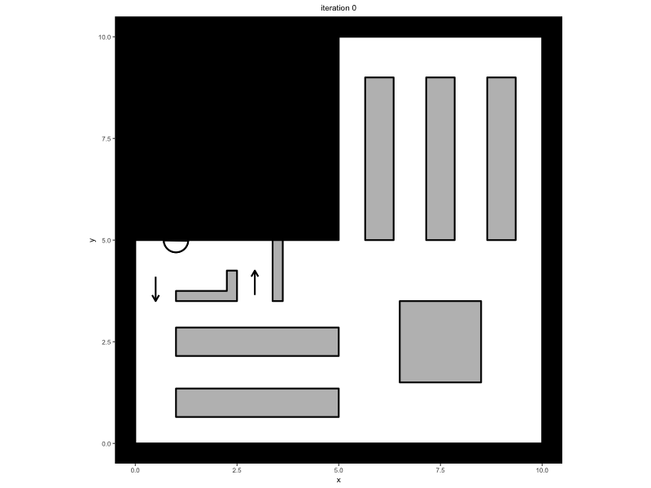

In the vignette Simulations, we explained the basic workflow behind performing a simulation. In this vignette, we will dive deeper into tweaks one can do to further refine simulations.
Initial Conditions
Up to now, simulations have always started from scratch, having no
agents inside of the environment at the start and slowly building
towards a greater number of agents within the space. However, there may
be occasions where the user may want to start a simulation from a
particular initial condition or initial state, for example
starting with
number of agents in the space or continuing a previous simulation from a
particular iteration thereof. In this section, we will describe several
ways in which users can provide initial conditions to the simulate
function.
While we will only focus on the simulate
function, some of the functionality underlying the creation of initial
conditions is handled by a dedicated function, namely create_initial_condition.
Please consult its documentation for an overview of its full
functionality.
Initial state
The most straightforward way to include an initial condition is by
providing an instance of a state
to the initial_condition argument in simulate,
which then serves as the first state of the simulation. Assuming we have
defined my_predped as an instance of the predped
class, and furthermore assuming that initial_state is an
instance of the state
class that will serve as our initial condition, we can start the
simulation from this point by calling:
trace <- simulate(
my_predped,
initial_condition = initial_state,
# Additional arguments defining the simulation
)How one comes about initial_state is left to the user,
but it will most often come from a previous simulation, such as in the
following example:
# Simulate an initial trace
trace <- simulate(
my_predped,
max_agents = 3,
iterations = 100
)
# Continue starting from the last state in
# this trace. For this, we need to first
# transform the trace to a list of states
list_of_states <- trace_to_state(trace)
my_state <- list_of_states[[101]]
continued_trace <- simulate(
my_predped,
max_agents = 3,
iterations = 100,
initial_condition = my_state
)Note that providing a state to the
initial_condition argument only works if both the
state and the model – here, variables
initial_state and my_predped – both contain
the same environment under their slot setting. Furthermore
note that the only property of the state that is retained
for the new simulation is the list of agents
that it contains. It may therefore be more interesting to consider the
next approach for controlling initial conditions.
Initial List of Agents
A second option is to provide a list of agents
that serve as the first people in the room. This list can be provided to
the initial_agents argument of simulate:
# Retrieve the list of agents from the initial trace
my_agents <- trace@states[[101]]
# Simulate using this initial list of agents
continued_trace <- simulate(
my_predped,
initial_agents = my_agents,
# Additional arguments defining the simulation
)One can also create agents manually through either their constructor
agent
or through the functions add_agent
and add_group.
This allows users to place agents at locations are deemed interesting
from a simulation perspective.
Initial Number of Agents
Finally, users can let predped take care of creating an
initial condition itself by specifying the
initial_number_agents argument of simulate.
Rather than controlling all specifics of the agents in the initial
conditions, specifying this argument allows users to control only the
number of agents that the simulation starts up with, letting
predped take care of heterogeneity, locations, and
goals:
# Start simulation with 3 agents in the room
trace <- simulate(
my_predped,
initial_number_agents = 3,
# Additional arguments defining the simulation
)Note that when the specified number of people doesn’t fit, the algorithm generating these agents will stop and provide the agents it was able to generate as an initial condition instead.
# Try to fit too many people in the room
trace <- simulate(
my_predped,
max_agents = 3,
iterations = 10,
initial_number_agents = 50
)
#>
#> Precomputing edges
#> Your model: model vjubq is being simulatedNote that there is no guarantee that the required number of agents is generated, even when this number is realistic for the provided environment.
One-directional Flow
Up to now, we have assumed pedestrian flow to be be unrestricted in
terms of direction. However, there are cases in which pedestrian flow is
limited to only a single direction, which is for example the case at art
exhibitions, gates at the metro station, or the one-directional aisles
in the supermarkets during the COVID-19 pandemic. Given the ubiquity of
unidirectional flow, we included functionality to restrict pedestrian
movement to a single direction through the definition of segments
and providing them to the limited_access slot of the background
class. In predped, segments
are defined by their first (from) and second coordinate
(to) and can be created as follows:
# Create a segment that starts at the origin and goes to coordinate P(1, 1)
my_segment <- segment(
from = c(0, 0),
to = c(1, 1)
)Providing segments to the limited_access
slot will restrict access of pedestrians in such a way that they can
either cross or not cross the segment itself. A visual representation of
this is shown in the following figure:

A segment going from the coordinate
to another coordinate
(from and to respectively) ensures an agent
that stand on the left of this segment cannot cross the segment. From a
mathematical viewpoint, this comes down to the following formalism:
Defining
as a coordinate, defining the orientation of the segment as the angle
,
and the orientation of the agent relative to the start of the segment as
,
then a segment restricts the agent’s movement when:
Let’s put this to practice. First, we define a simplified version of a train station where people can enter the space either through one of the entrances or through the train tracks. Such a simplified train station may look as follows:
train_station <- background(
# Define a space of size (10, 5) meters
shape = rectangle(
center = c(0, 0),
size = c(10, 5)
),
# Define some gates at the entrances. These gates are
# not interactable.
objects = list(
# Gates on the left
rectangle(
center = c(-3, 0),
size = c(0.6, 1.3),
interactable = FALSE
),
rectangle(
center = c(-3, 1.9),
size = c(0.6, 1.2),
interactable = FALSE
),
rectangle(
center = c(-3, -1.9),
size = c(0.6, 1.2),
interactable = FALSE
),
# Gates on the right
rectangle(
center = c(3, 0),
size = c(0.6, 1.3),
interactable = FALSE
),
rectangle(
center = c(3, 1.9),
size = c(0.6, 1.2),
interactable = FALSE
),
rectangle(
center = c(3, -1.9),
size = c(0.6, 1.2),
interactable = FALSE
)
),
# Define the entrances themselves. The two entrances
# at the top and bottom of the space represent the
# stairs agents can use to exit the train tracks.
# The two entrances at the left and right represent
# the entrances of the train station.
entrance = rbind(
# Top and bottom
c(0, 2.5),
c(0, -2.5),
# Left and right
c(-5, 0),
c(5, 0)
)
) which when plotted gives:
plot(train_station)
#> Loading required namespace: ggplot2
Let’s impose unidirectionality in passing through the gates, so that people always have to take the gates to their right to exit or enter the train station. To achieve this, we add segments to each of the gates as follows:
# Add segments that deal with directionality to the
# previously defined train station
limited_access(train_station) <- list(
# Gates on the left
segment(from = c(-3.3, -0.6), to = c(-3.3, -1.3)),
segment(from = c(-2.7, 0.6), to = c(-2.7, 1.3)),
# Gates on the right
segment(from = c(2.7, -0.6), to = c(2.7, -1.3)),
segment(from = c(3.3, 0.6), to = c(3.3, 1.3))
)We can visualize the unidirectionality by using the plot
method once again:
# Plot the train station. The argument `segment.hjust`
# makes sure arrows are plotted entirely to the left
# of the segment, that is that the arrow's point lies
# directly on center of the segment itself.
plot(
train_station,
segment.hjust = 0
)
This figure again shows the train station, but includes arrows that point in the direction that agents can move into at the specified locations. Note that the segments were added at the end of the gates rather than in the middle of them to prevent agents moving to closed gates before realizing they are not accessible.
To see unidirectionality in action, we create another instance of the
predped class and simulate movement data within this
restricted train station:
set.seed(1)
# Link the train station to the agent characteristics
my_predped <- predped(
setting = train_station,
archetypes = c(
"BaselineEuropean",
"DrunkAussie"
),
weights = c(0.75, 0.25)
)
# Simulate some data
trace <- simulate(
my_predped,
max_agents = 10,
iterations = 250,
add_agent = 5,
print_iteration = TRUE
)
# Visualize and turn into a GIF
plt <- plot(trace)
gifski::save_gif(
lapply(plt, print),
file.path("unidirectional_example.gif"),
delay = 1/10
)
knitr::include_graphics(
file.path("../man/figures/unidirectional_example.gif")
)
Situational Changes
A lot of the functionality that we displayed up to now has assumed
that you can pre-specify the behavior of the agents, meaning you do not
control the behavior of the agents once the simulation is running. Yet,
the user may wish to more directly influence the course of a simulation,
for example to urge pedestrians to perform an evacuation, to let agents
walk around as they would in a dynamic experiment, or to adjust an
agent’s parameters so that they rush to catch their train. This kind of
conditional manipulations are possible in predped,
specifically through the specification of the fx argument
of the simulate
function.
Let’s take the evacuation as an example. First, we create a simplified supermarket environment:
# Create a simplified version of a supermarket
supermarket <- background(
# Shaking things up: Create a polygon environment
shape = polygon(
points = cbind(
c(0, 0, 5, 5, 10, 10),
c(0, 5, 5, 10, 10, 0)
)
),
# Objects in the environment, consisting of
# some shelves and a gated entrance. Gates are
# again not interactable.
objects = list(
# Top shelves
rectangle(center = c(7.5, 7), size = c(0.7, 4)),
rectangle(center = c(6, 7), size = c(0.7, 4)),
rectangle(center = c(9, 7), size = c(0.7, 4)),
# Bottom shelves
rectangle(center = c(3, 2.5), size = c(4, 0.7)),
rectangle(center = c(3, 1), size = c(4, 0.7)),
# Central box
rectangle(center = c(7.5, 2.5), size = c(2, 2)),
# Cash register and gate
polygon(
points = cbind(
c(1, 2.25, 2.25, 2.5, 2.5, 1),
c(3.75, 3.75, 4.25, 4.25, 3.5, 3.5)
),
interactable = FALSE
),
rectangle(
center = c(3.5, 4.25),
size = c(0.25, 1.5),
interactable = FALSE
)
),
# Entrance and exit are at the cash register
entrance = c(1, 5),
# Limited access so that agents have to pass the cash
# register beforehand
limited_access = list(
segment(from = c(1, 3.5), to = c(0, 3.5)),
segment(from = c(2.5, 4.25), to = c(3.375, 4.25))
)
)
# Plot the supermarket
plot(
supermarket,
segment.hjust = 1
)
Within our simulation, we want agents to enter the room, walk around
to get the items they want to buy, but then be forced to evacuate at a
particular time. To achieve this, we have to specify the fx
argument, providing it with a function that takes in the state at each
iteration of the simulation and allows the user to make a set of desired
changes to this state. For our evacuation procedure, we create the
function start_evacuation, starting an evacuation after
100 iterations:
start_evacuation <- function(state) {
# Check whether the current iteration is greater than
# 100. If not, then we do not want to change the state.
if(iteration(state) == 100) {
# Delete all agents that were waiting to enter the
# space.
potential_agents(state) <- list()
# Delete all goals of the agents that are running
# around in the supermarket. This pertains to both
# the goal list and the current goal
for(i in seq_along(agents(state))) {
# Extract this agent
agent_i <- agents(state)[[i]]
# Change their current activities
goals(agent_i) <- list()
current_goal(agent_i)@counter <- 0
status(agent_i) <- "completing goal"
# Put the agent back in the list
agents(state)[[i]] <- agent_i
}
# Make sure that agents cannot be added anymore
# by lowering the maximal number of agents to 0
iteration_variables(state)$max_agents <- 0
}
return(state)
}Several things in this function deserve note:
- A conditional statement in this function checks for the iteration number in the simulation, ensuring that the evacuation procedure only starts when iterations have passed;
- Within the if-statement, we adjust the
stateso that the evacuation can start. Specifically, we make the following changes:- We ensure no agents are standing in line, waiting to enter the space
(delete the contents of the
potential_agentsslot); - We ensure the space should be empty by setting
max_agentsto in theiteration_variables; - We adjust the agents so that they have no more goals to achieve, triggering them to leave the environment.
- We ensure no agents are standing in line, waiting to enter the space
(delete the contents of the
With this function defined, we can now run the simulation:
set.seed(1)
# Connect environment to agent characteristics
my_predped <- predped(
setting = supermarket,
archetypes = "BaselineEuropean"
)
# Run the simulation and provide our function
# to the `fx` argument
trace <- simulate(
my_predped,
max_agents = 30,
add_agent = 5,
iterations = 250,
fx = start_evacuation
)
# Create plots and GIF
plt <- plot(
trace,
segment.hjust = 1
)
# Provide a cue of when the evacuation starts
plt[[101]] <- plot(
trace,
iterations = 101,
segment.hjust = 1,
shape.fill = "red"
)
# Save to a gif
gifski::save_gif(
lapply(plt, print),
file.path("supermarket.gif"),
delay = 1/10
)
Of course, you are not limited to changing the agents, but can also
change the environment itself. For example, if we want to allow agents
to ignore the uni-directionality imposed at the beginning of the
simulation, we can empty the limited_access slot once the
evacuation has started:
start_evacuation <- function(state) {
if(iteration(state) == 100) {
potential_agents(state) <- list()
for(i in seq_along(agents(state))) {
agent_i <- agents(state)[[i]]
goals(agent_i) <- list()
current_goal(agent_i)@counter <- 0
status(agent_i) <- "completing goal"
agents(state)[[i]] <- agent_i
}
iteration_variables(state)$max_agents <- 0
# Delete the limited access
limited_access(state@setting) <- list()
}
return(state)
}In other words, the fx argument allows users to create a
whole range of situations that go beyond the simple “walk around and
attain a set of goals”, including evacuations, experimental designs,
peak and off-peak densities, and many more situations without having to
worry about the implementational details of the package.
Bookkeeping through the variables Slot
If one wants to create even more complicated situations, one can
leverage the variables slot of the state
class to make bookkeeping across the simulation easier. This slot
contains a named list of all variables relevant to your simulation.
Following our evacuation example, we may want to keep track of how long
it takes each agent to leave the room after the evacuation has been
signaled. We can achieve this by creating a variables of times in the
variable slot and updating it accordingly, for example
redefining start_evacuation as:
start_evacuation <- function(state) {
# Ensures the start of the evacuation and creates the variable of interest
if(iteration(state) == 100) {
potential_agents(state) <- list()
for(i in seq_along(agents(state))) {
agent_i <- agents(state)[[i]]
goals(agent_i) <- list()
current_goal(agent_i)@counter <- 0
status(agent_i) <- "completing goal"
agents(state)[[i]] <- agent_i
}
iteration_variables(state)$max_agents <- 0
# Create the times variable as a vector of 0s of the same length as the
# agents, containing their names
variables(state)$times <- numeric(length(agents(state))) |>
`names<-` (sapply(agents(state), id))
}
# Update the variables based on who is leaving the simulation
if(iteration(state) > 100) {
# Extract the times
times <- variables(state)$times
# Check whether any agent has left the simulation
ids <- sapply(
agents(state),
id
)
left <- !(names(times) %in% ids) & times == 0
# Update the times and put back in the list
times[left] <- iteration(state) - 100
variables(state)$times <- times
}
return(state)
}We can then rerun the simulation using the code above and inspect the resulting evacuation times by extracting the variable from the final iteration:
#>
#> Precomputing edgesYour model: model ydgab is being simulated
variables(trace)[[251]]$times
#> obfsp azhsq yryhv iaxva lsvwt meczt aqgxz ntwow vodht rjkrd vbuem
#> 81 31 74 35 42 13 17 26 6 10 3Using your Own Parameters
While we provide a lot of pre-specified agent types to choose from,
one may wish to play around with the parameters themselves to
personalize their own simulations. In this case, you can save the
parameters for future use by letting the predped
constructor know what parameters you would want to use by specifying the
filename argument:
The typical workflow for using your own parameters is thus the following:
- Load the default parameters of
predped; - Adjust the parameters of interest;
- Save them in a separate file;
- Link to this file when you create an instance of the
predpedclass.
In code, this workflow looks like this:
# Read in default parameters
params <- load_parameters()
# Only retain the BaselineEuropean in the parameters and
# change their preferred speed to 0.5 m/s
means <- params[["params_archetypes"]]
params[["params_archetypes"]] <- means |>
# Only retain BaselineEuropean
dplyr::filter(name == "BaselineEuropean") |>
# Change preferred speed
dplyr::mutate(preferred_speed = 0.5)
# Also change params_sigma to only retain the
# BaselineEuropean
covariances <- params[["params_sigma"]]
params[["params_sigma"]] <- covariances["BaselineEuropean"]
# Save this list of parameters in a local file
saveRDS(
params,
file.path("my_parameters.Rds")
)
# Create an instance of the predped class
my_predped <- predped(
setting = my_background,
filename = file.path("my_parameters.Rds")
)In this example, we saved the complete parameter list in one
.Rds file, but one can also choose to only adjust one part
of this list and combine it with the defaults of the package. For
example, we can change and save "params_archetypes" and
read it in through the predped constructor:
# Read in default parameters
params <- load_parameters()
# Only retain the BaselineEuropean in the parameters and
# change their preferred speed to 0.5 m/s
means <- params[["params_archetypes"]]
means <- means |>
# Only retain BaselineEuropean
dplyr::filter(name == "BaselineEuropean") |>
# Change preferred speed
dplyr::mutate(preferred_speed = 0.5)
# Save the means as a separate data.frame
write.table(
means,
file.path("my_parameters.csv")
)
# Read in these parameters through predped
my_predped <- predped(
setting = my_background,
filename = file.path("my_parameters.csv"),
sep = " "
)Note that the sep argument denotes the delimiter that is
used in the saved file. Furthermore note that the file has been merged
with the predped defaults, and that
parameters(my_predped) still returns a list containing the
three slots mentioned earlier.
Similar to the case with only one slot of the list,
predped can also deal with changes in a few components in a
list, as long as they are saved in a list with the correct slot
names:
# Read in default parameters
params <- load_parameters()
# Only retain the BaselineEuropean in the parameters and
# change their preferred speed to 0.5 m/s
means <- params[["params_archetypes"]]
means <- means |>
# Only retain BaselineEuropean
dplyr::filter(name == "BaselineEuropean") |>
# Change preferred speed
dplyr::mutate(preferred_speed = 0.5)
# Also change params_sigma to only retain the
# BaselineEuropean
covariances <- params[["params_sigma"]]
covariances <- covariances["BaselineEuropean"]
# Make a new parameter list and save it
new_parameters <- list(
"params_archetypes" = means,
"params_sigma" = covariances
)
saveRDS(new_parameters, file.path("my_parameters.Rds"))
# Read in these parameters through predped
my_predped <- predped(
setting = my_background,
filename = file.path("my_parameters.Rds")
)Note that if the content of a slot in the list does not have the same
structure as the original parameters, predped will provide
an error. If the name of the slot itself does not correspond to the
original, it will discard the content and replace it with the
defaults.